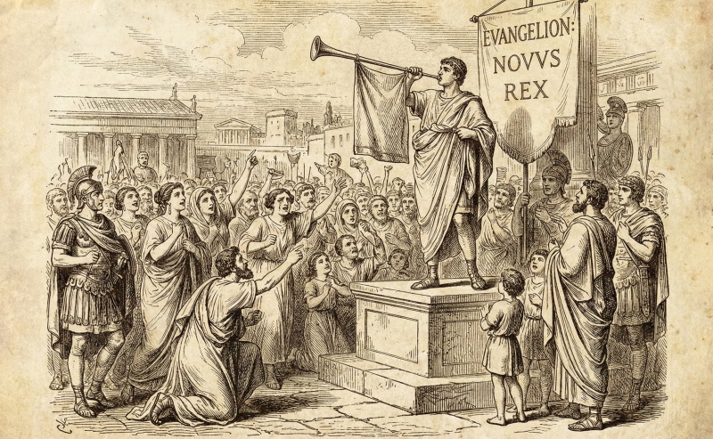

신앙생활을 오래 했음에도 불구하고, 문득 "내가 잘 믿고 있는 건가?" 하는 의문이 들 때가 있다.

가끔은마치 컴퓨터가 버벅거릴 때 리셋 버튼을 누르고 다시 시작하고 싶은 것처럼, 혹은 낯선 곳으로 떠나 나를 아는 사람이 아무도 없는 곳에서 새롭게 시작하고 싶은 마음이 드는 것 처럼 신앙생활에 대해서도모든 것을 리셋하고 싶을 때가 있다 심지어 세례를 다시 받고 싶다는 엉뚱한 생각이 들 정도로, 내 영혼의 상태가 뭔가 개운치 않을 때가 있다. 이런 고민은 단순히 감정의 문제가 아니다. 어쩌면 우리가 믿고 있는 '복음'의 첫 단추가 잘못 끼워져 있기 때문에 발생하는 근본적인 오류일지도 모른다. 신앙에서 가장 중요한 것이 "복음" 이라고 하는데요 복음이 무엇이냐고 질문해보면복음에 대해서 잘 모르거나 복음을 너무 가볍게, 혹은 반쪽만 알고 있는 것 같다는생각이 들때가 많다.
복음은 '좋은 소식' 입니까? 교회를 다니는 사람에게 '복음(Gospel)'이 무엇이냐고 물으면대부분 '기쁜 소식(Good News)'이라는 대답한다. 하지만 도대체 무엇이 기쁜 소식인가?세상에는 기쁜 소식(Good News)이 많다. 백화점에서 90% 폭탄 세일을 한다는 소식도 기쁜 소식이고, 주식이 올랐다는 것도 기쁜 소식이다. 하지만 성경이 말하는 복음은 그런 차원이 아니다. '복음'으로 번역된 헬라어 '유앙겔리온(Euangelion)'은 황제가 등극하거나 전쟁에서 승리했을 때만 쓰던 단어였다.

즉, 복음의 진짜 의미는 "왕이 바뀌었다"는 선포다. 단순히 나에게 이익을 주는 좋은 소식이 아니라, 내 인생을 다스리는 통치자가 바뀌었다는 거대한 우주적 사건. 이것이 복음의 시작이다. 그런데 우리는 복음을 그저 내가 천국 가기 위한 티켓 정도로 축소해 버렸다. 물에 빠진 사람을 건져주는 것, 그 이상 우리는 흔히 '구원받았다'라고 말한다. 물에 빠져 죽어가던 사람을 건져주었으니 얼마나 고마운 일인가. 이것이 '구원(Salvation)'이다. 하지만 진짜 복음은 여기서 멈추지 않는다. 물에서 건져냄을 받은 사람은 처음엔 감사하다가도 시간이 지나면 "내 보따리 어디 갔냐"며 따지기 마련이다. 여전히 내 삶의 주인이 '나'이기 때문이다. 성경은 구원을 넘어 '구속(Redemption)'을 이야기한다. 구속은 값을 치르고 샀다는 뜻이다. 고대 노예 시장에서 누군가 값을 지불하고 노예를 사면, 그 노예의 소유권은 돈을 낸 사람에게로 넘어간다. 예수님이 십자가에서 돌아가실 때 "다 이루었다(Tetelestai)"라고 말씀하셨다. 이 말은 당시 상업 용어로 "테텔레스타이", 즉 "빚을 다 갚았다(Paid in full)"는 뜻이다. 죄로 인해 죽을 수밖에 없었던 나의 죄값을 예수님이 당신의 생명으로 대신 갚으셨다.
주인이 바뀌지 않으면 복음이 아니다 여기서 중요한 질문이 생긴다. 누군가 값을 치르고 샀다면, 이제 그 물건은 누구의 것인가? 당연히 값을 치른 사람의 것이다. 이것이 우리가 놓치고 있는 복음의 나머지 반쪽이다. 예수님이 내 죄값을 치르셨다면, 나는 이제 내 것이 아니다. 나는 예수님의 것이다. 내 인생의 소유권이 나에게서 하나님께로 넘어간 사건, 이것이 믿음의 실체다. 하지만 많은 현대 그리스도인들이 예수님을 '구주(Savior, 나를 구해준 분)'로는 인정하지만, '주님(Lord, 나의 주인)'으로는 인정하려 하지 않는다. 구원은 받고 싶지만, 간섭은 받기 싫은 것이다. 입술로는 "주여, 주여" 하지만 실제 삶의 결정권은 여전히 내가 쥐고 있다. 내가 사업을 할지 말지, 이직을 할지 말지, 돈을 어디에 쓸지를 내가 결정한다면, 엄밀히 말해 나는 아직 그분을 주인으로 모신 것이 아니다.
진정한 자유는 '올바른 주인'을 만날 때 온다 "내 마음대로 못 살면 너무 답답하지 않을까?" 우리는 하나님이 주인이 되는 것을 두려워한다. 내 자유를 뺏길까 봐, 손해 볼까 봐 겁을 낸다. 하지만 내가 주인 되어 살았던 지난 삶을 돌아보라. 내 선택은 늘 옳았는가? 그 결과에 대한 책임과 불안함 때문에 밤잠 설치지 않았는가? 종은 걱정하지 않는다. 주인이 책임지기 때문이다. 진짜 복음의 능력은 여기서 나온다. 전지전능하고 나를 목숨 바쳐 사랑하는 분이 내 주인이 되셨다는 사실. 그분의 다스림 안으로 들어가는 것. 그것이야말로 고아처럼 세상에 던져진 우리가 누릴 수 있는 가장 안전하고 완전한 자유다. 신앙이 흔들리고 삶이 공허하다면 다시 점검해야 한다. 나는 천국행 티켓만 쥐고 있는가?아니면 주인을 바꾼 사람인가?